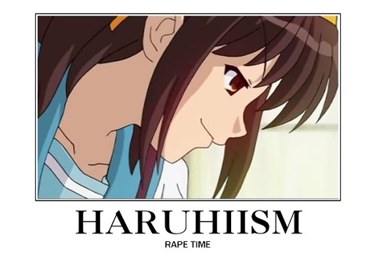
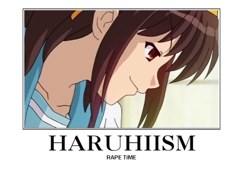

The Temple of Haruhi's Webpage Changelog
Back
3/11/25
Various vanity adjustments coupled with the introduction of the changelog
for transparency's sake.
 You are currently viewing the official webpage of the Temple of Haruhi. What is the Temple of Haruhi?

You are already currently reviewing the Temple of Haruhi's webpage changelog.
⊕2025 eh CopyLeftHandPath of The Great D. Dogchow Imperative - No rights reserved (for anyone, forever).
This webpage is best viewed with a video resolution of my choice from behind my own monitor.
You are currently viewing the official webpage of the Temple of Haruhi. What is the Temple of Haruhi?

You are already currently reviewing the Temple of Haruhi's webpage changelog.
⊕2025 eh CopyLeftHandPath of The Great D. Dogchow Imperative - No rights reserved (for anyone, forever).
This webpage is best viewed with a video resolution of my choice from behind my own monitor.